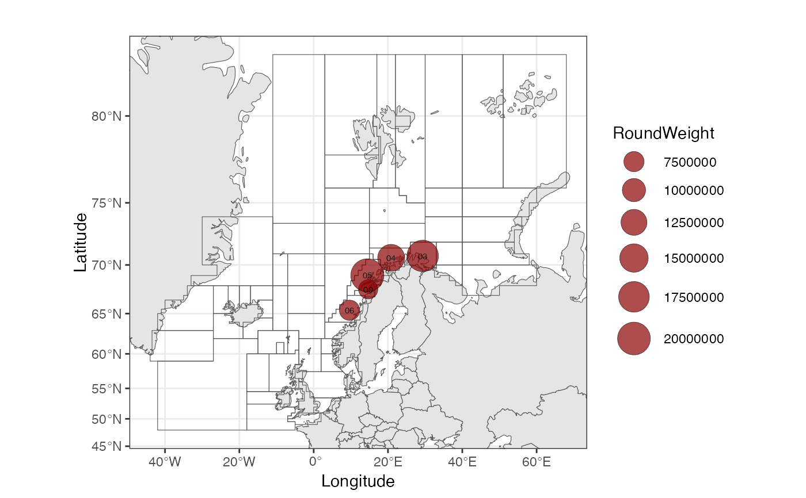

Example of data formatted as StoxLandingData, with some
additional columns added with AddGearGroupStoxLanding, AddStratumStoxLanding, and AddAreaPositionStoxLanding, and AddStratumStoxLanding, and AddPeriodStoxLanding.
The data contain saithe landings by Norwegian vessels in areas (mainareaFdir2018) "00", "03", "04", "05","06", in 2021.
Usage
data(StoxLandingDataExample)Examples
RstoxFDA::plotBubbleMap(RstoxFDA::StoxLandingDataExample$Landing,
"Area", "RoundWeight", RstoxFDA::mainareaFdir2018)
#> Spherical geometry (s2) switched off
#> Spherical geometry (s2) switched on
